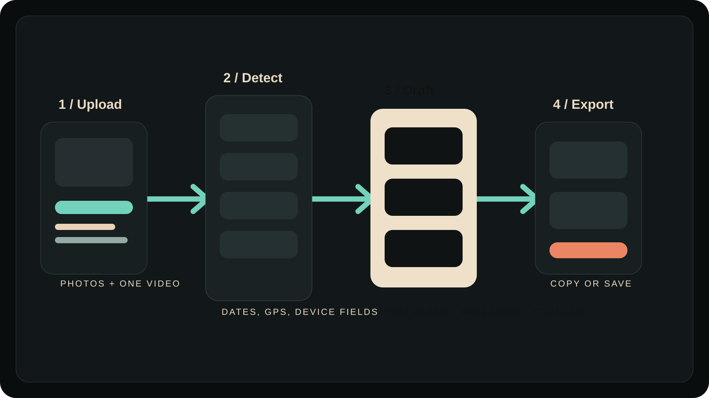

What it is
This repo describes Social Post Helper as a lightweight Next.js app that helps people upload media, read available metadata, add a little context, and turn that into drafts they can edit, copy, or export.
Social Post Helper / field manual
Web app / MVP / local-first
Social Post Helper reads dates, dimensions, device fields, GPS when available, and your own notes, then builds editable starting points for Instagram, Facebook, and YouTube without leaning on AI.
Why it exists
This repo describes Social Post Helper as a lightweight Next.js app that helps people upload media, read available metadata, add a little context, and turn that into drafts they can edit, copy, or export.
The useful part is not pretending to understand the image. It is taking repetitive setup work off the table so the user starts from a structured draft instead of a blank box.
Core surface
Reads created date, GPS when present, camera/device fields, file type, resolution, and video duration.
Generates platform-specific drafts through deterministic templates instead of model output.
Add category, what happened, audience, and notes so the drafts stay useful without pretending to see the media.
Includes Instagram caption, Facebook post, YouTube title options, description, upload summary, hashtags, alt text, and a short caption.
Preferences and the last session snapshot are stored in the browser so the workflow can reopen without accounts.
Reverse geocoding is optional, with a coordinate fallback when location lookup is unavailable or disabled.
Field sequence
Upload one or more photos and, for this MVP, up to one video.
Review dates, dimensions, GPS availability, media mix, and the structured summary before writing.
Pick a category, add what happened, note who the post is for, and choose tone and platform preferences.
Adjust the generated text, copy what works, and export JSON or plain text if needed.
GPS and date can become a clean location-aware starting point instead of another post written from scratch.
Multiple photos and a manual note become a short progress update without needing a new writing sprint.
The MVP stays metadata-driven for video and turns filename, notes, date, and location into a basic publishing pack.
Visual reference

Proof and limits
The README explicitly says no LLMs, no cloud AI, no OCR, and no paid AI APIs.
The repo includes export-oriented Next.js settings and a GitHub Pages workflow for static deployment.
Local checks passed for tests, TypeScript, and lint at the time this export package was built.
No transcript extraction, no OCR, no direct posting, no accounts, and session restore does not reattach original file blobs.
Repo history also shows focused compatibility work for HEIC/HEIF handling and Safari/macOS Photos picker behavior. This matters because upload reliability is part of the product, not an afterthought.
FAQ
No. The documented MVP is deterministic and metadata-first, with future AI integration isolated for later work.
When available, it reads created date, GPS, camera or device fields, file type, image or video dimensions, and video duration.
Preferences and the last session snapshot are stored in browser localStorage in the MVP.
No. The documented session restore brings back metadata context and drafts, not the original file blobs.
Photos are the main path, with one video supported for metadata-driven draft generation in this MVP. HEIC preview depends on browser support.
No. Direct publishing, OAuth flows, accounts, scheduling, transcript extraction, and OCR are all out of scope for the current MVP.
Final note
Social Post Helper earns its place by making the first draft smaller, cleaner, and more honest. It is a good fit for people who want structure from their own media before they want AI to rewrite everything.